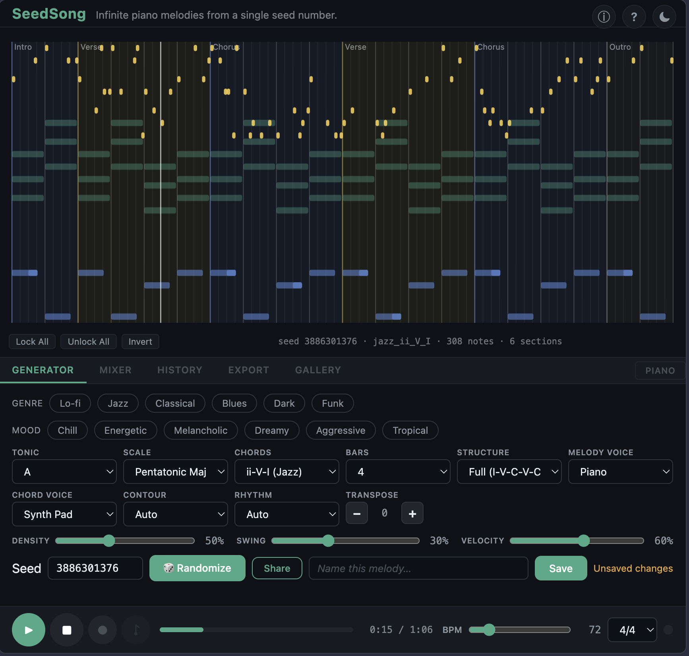
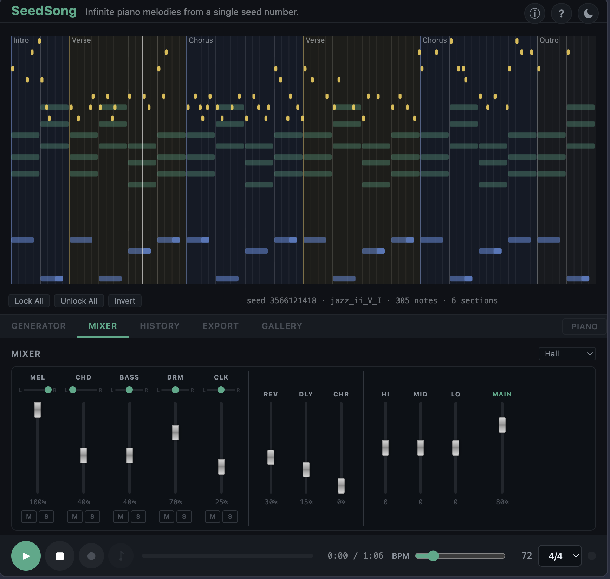

Infinite melodies from a single seed number.
Compose multi-section songs, mix, and export — right in your browser.
Open the app No install. No sign-up. Works offline.

DAW-style interface with tabbed controls, multi-section score, and full mixer console.
Every song is determined by a single number. Same seed, same song — always. Share a URL and anyone hears your exact piece.
Intro, verse, chorus, outro — with contrasting energy, density, and dynamics. Not just looping phrases.
Per-track volume, pan, mute/solo. Reverb presets, delay, chorus, 3-band EQ. All settings persist across reloads.
Lo-fi, Jazz, Classical, Blues, Funk, Chill, Energetic, Dreamy — one click sets tonic, scale, tempo, density, and effects.
Format 1 MIDI with separate tracks per instrument, or render to WAV — all client-side. Import directly into any DAW.
Click to select notes, drag to move, resize edges, delete with Backspace. Lock bars to preserve edits through regeneration.
Piano, Synth Pad, Pluck, E-Piano, Lead, Organ, Strings — independent melody and chord voices for timbral contrast.
Pure vanilla JavaScript. No frameworks, no bundlers, no npm. Open source and easy to fork or extend.
Choose a genre/mood preset, or dial in tonic, scale, contour, and rhythm manually.
The algorithm composes a full song. Lock bars you like, edit notes, adjust the mix.
Copy the URL to share your song, or export as multi-track MIDI or WAV.
Generate ideas, lock what you like, edit the rest. Export to your DAW for further work.
Generate background music from a seed — deterministic, lightweight, royalty-free.
Explore scales, modes, chord progressions, and song structure interactively.
Study a clean Web Audio + procedural generation codebase with zero dependencies.